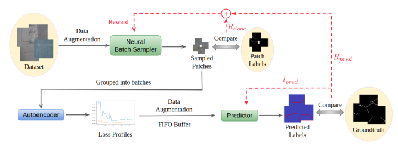
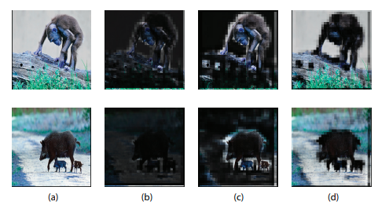

Wen-Hsuan ChuI am a Robotics Ph.D. at Prof. Katerina Fragkiakdaki' lab, at Carnegie Mellon University. Prior to this, I completed my M.S. at Carnegie Mellon University, in The Robotics Institute, advised by Prof. Kris Kitani, on machine learning and computer vision. Before this, I did a B.S. in Electrical Engineering at National Taiwan University. |

|
Publications

|
Zero-Shot Open-Vocabulary Tracking with Large Pretrained ModelsUnder Submission Wen-Hsuan Chu, Adam W. Harley, Pavel Tokmakov, Achal Dave, Leonidas Guibas, Katerina Fragkiadaki project page paper |

|
Tracking Any Point in a Video with Region-Aware Point Trajectory TransformerUnder submission Wen-Hsuan Chu, Yizhou Zhao, Jie Li, Rares Ambrus, Adam W. Harley, Katerina Fragkiadaki |
|  |
Neural Batch Sampling with Reinforcement Learning for Semi-Supervised Anomaly DetectionECCV 2020 Adam W. Harley, Kris M. Kitani paper |

|
Spot and Learn: A Maximum-Entropy Patch Sampler for Few-Shot Image ClassificatioCVPR 2019 Wen-Hsuan Chu, Yu-Jhe Li, Jing-Cheng Chang, Yu-Chiang Frank Wang paper |
|  |
Learning Semantics-Guided Visual Attention for Few-shot Image ClassificationICIP 2018 Wen-Hsuan Chu, Yu-Chiang Frank Wang paper |